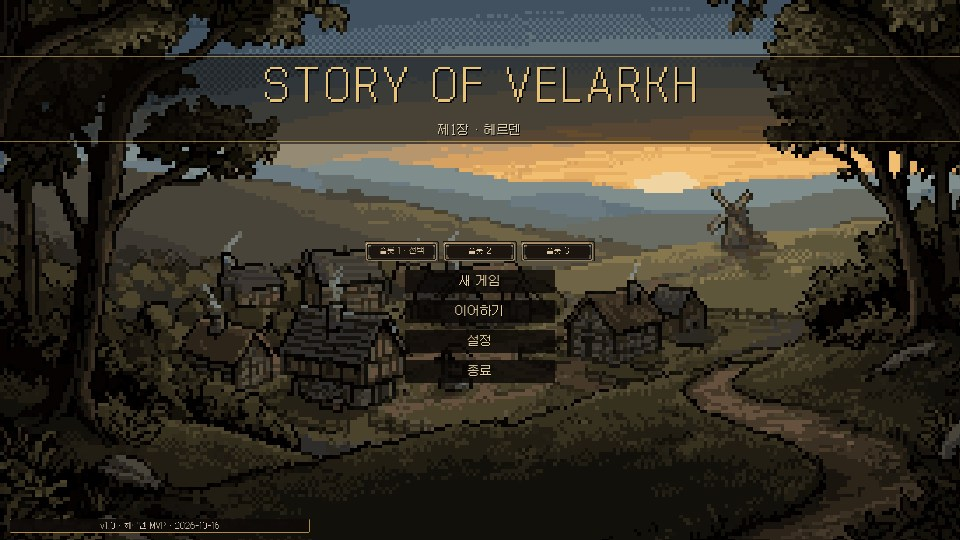
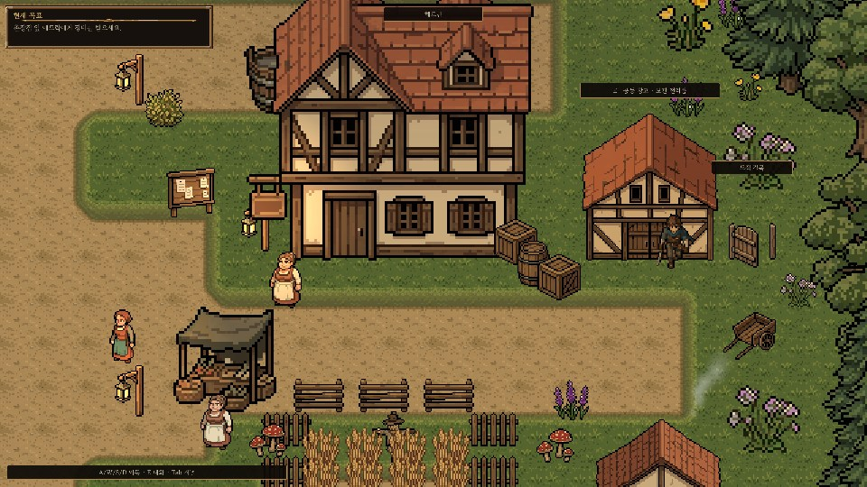
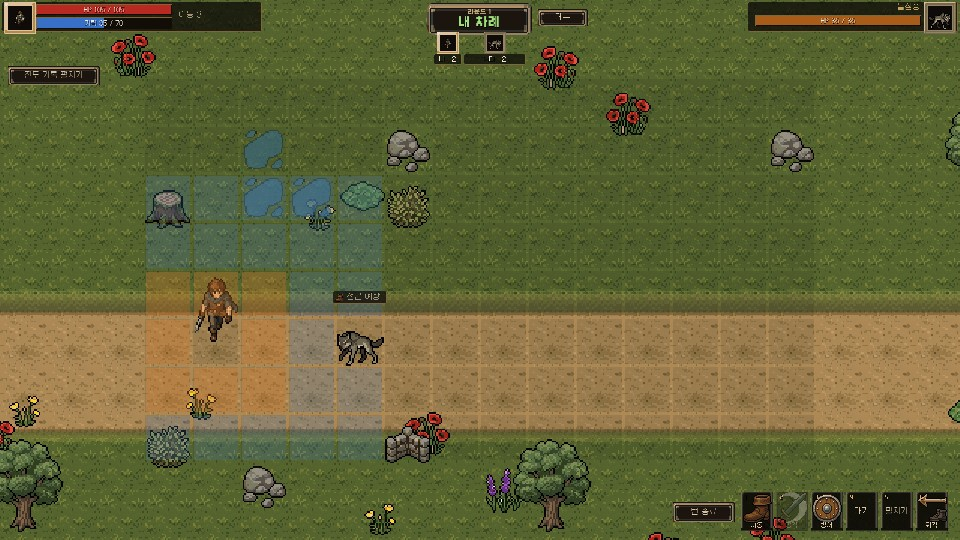

개발 중 화면이라 나중에 달라질 수 있어요.
어떤 게임인가요
캐릭터 하나가 자기만의 세계 하나를 계속 이어서 탐험하는 게임이에요. 싸움은 격자 위에서 하고, 어디에 서는지, 뭘 들고 있는지, 얼마나 다쳤는지가 중요해요. 대신 한 번 실수했다고 몇 시간을 날리는 식의 가혹함은 피하고 싶었어요.
1장은 마을 헤르덴과 그 주변 세 곳(농가, 도적이 지키는 길목, 숲 가장자리)이 무대고, 결말은 두 갈래예요. 마을 사람들 부탁을 들어주고, 지역을 오가며 싸우고, 장비를 사고 고치고 만들 수 있어요.
어떻게 만들고 있나요
설계는 제가 정해서 문서에 날짜와 함께 적어 두고, 구현은 Codex 에이전트에게 맡겨요. 결과는 Claude 에이전트가 게임을 직접 띄워 화면을 찍어 보고 확인해요. 저장 방식이나 보상처럼 한 번 잘못되면 되돌리기 어려운 부분은 테스트를 먼저 써 놓지 않으면 아무도 못 건드리게 해 뒀어요.
중간에 그림 방향을 한 번 통째로 바꿨어요. 처음 붙인 그림들은 크기도 해상도도 제각각이라 화면이 어수선했거든요. 지금은 640×360을 정수배로만 키우는 도트 화면으로 맞췄어요.
좀 민망한 일도 있었어요. 화면 확인용 게임 창을 모니터 밖에 띄우면 제 작업을 방해하지 않는다고 오래 믿었는데, 실제로 재 보니 실행할 때마다 20초쯤 포커스를 가져가고 있었어요. 규칙 문서를 고치고, 캡처를 여러 번 돌릴 땐 미리 말해 주기로 했어요.
지금은 어디까지 왔나요
자동 테스트 313개가 다 통과하고, 두 결말 모두 자동으로 처음부터 끝까지 완주돼요. 중간에 강제로 꺼도 다시 불러와지는 것까지 확인했어요. 남은 건 제가 직접 두 결말을 한 번씩 끝까지 해 보는 일이에요. 소리나 손맛 같은 건 테스트가 대신해 줄 수 없으니까요.